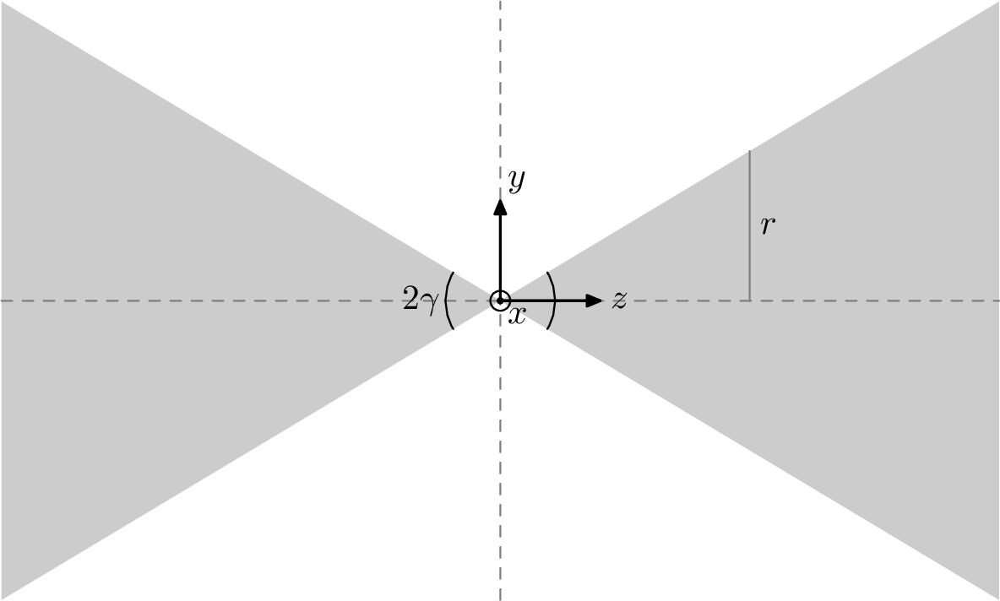
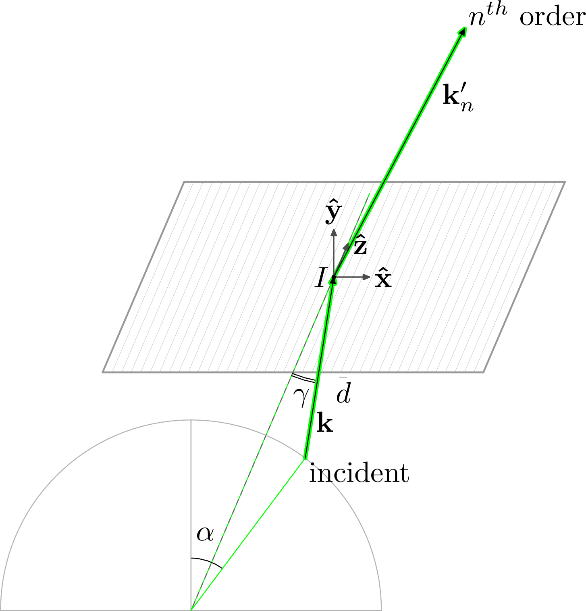
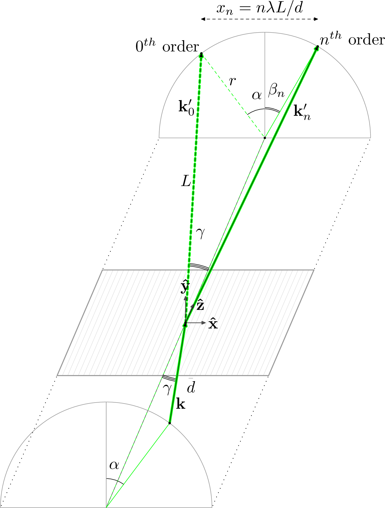
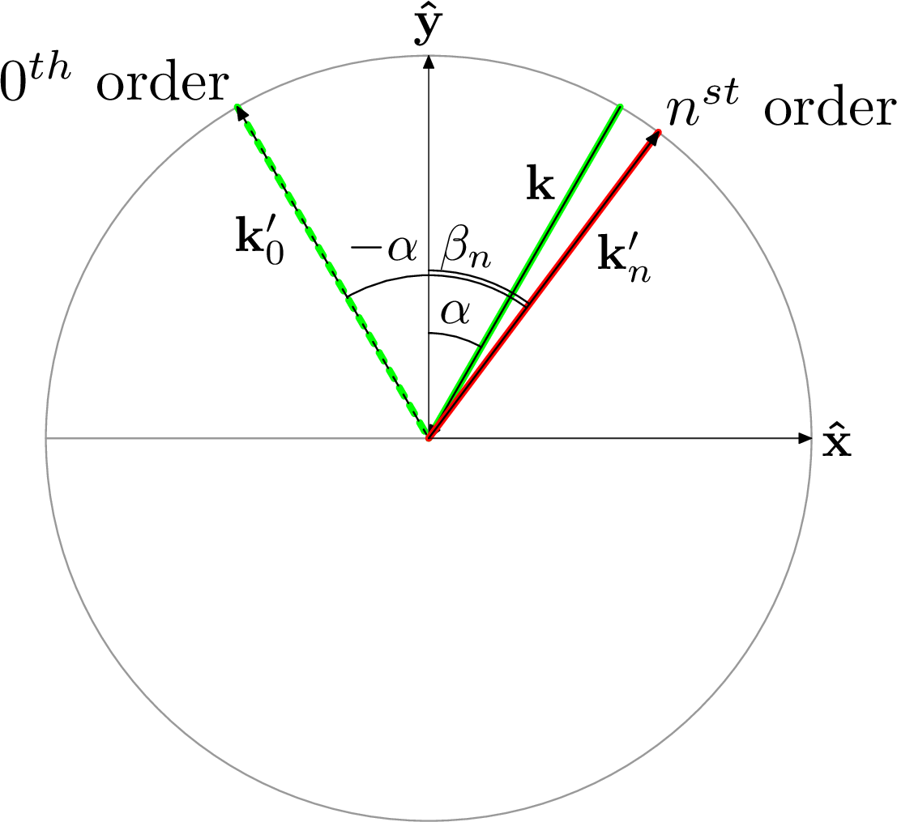
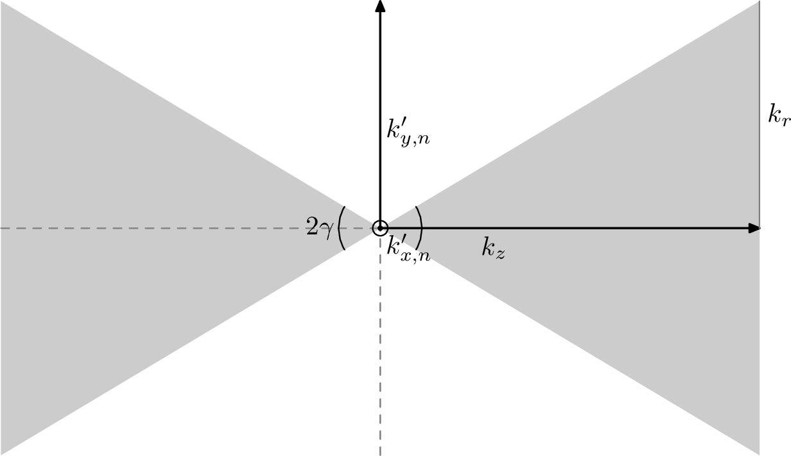

The equation for a cone oriented along the $z$-axis with an opening angle $2\gamma$ is given by
where $r = |z| \tan(\gamma)$ is the radius of a circular slice of the cone at an axial position $z$, as shown in Figure 1.

To see how off-plane-diffracted orders are confined to the surface of a cone, the trick is to replace $x$, $y$ and $z$ with analogous $\mathbf{k}$-space components for a diffracted wave vector, and to consider why it is justified to do so. This boils down to thinking of a reflection grating as something that functions like a grating in one direction but a mirror in the other. The punchline is that the components of the $n^{\text{th}}$-order vector, $\mathbf{k}_n'$, satisfy
which is made possible by the $z$-component, $k_z$, being preserved from the incident wave vector, $\mathbf{k}$; this is a result of $z$ being the groove direction. The components $k_{x,n}'$ and $k_{y,n}'$ then describe the location of the $n^{\text{th}}$ order on the arc of diffraction. The reasons for all of this are outlined as follows.
Wave Vectors and the Grating Equation
Let's consider a generic wave vector that represents the incident ray on a diffraction grating, illustrated in Figure 2:
which can be written in terms of the angles $\alpha$ and $\gamma$ as
where the length of the vector, $|\mathbf{k}| = k \equiv 2\pi/\lambda$, is the wavenumber of radiation and $\lambda$ is the wavelength.

Here, $\gamma$ can be thought of as the angle between $\mathbf{k}$ and the groove direction, $\hat{z}$, while $\alpha$ can be thought of the angle between $\mathbf{k} - k_z \hat{z}$ (i.e., $\mathbf{k}$ projected into the $\hat{x}$-$\hat{y}$ plane) and the grating normal, $\hat{y}$. Note that nothing has been spoken of a cone yet; rather, the components of $\mathbf{k}$ have simply been defined using an established coordinate system.
Let's also consider another generic wave vector that represents the $n^{\text{th}}$ diffracted order that reflects from the grating (also illustrated in Figure 2):
where the components are, for the moment, undefined but it is assumed that $|\mathbf{k}_n'| = k = 2\pi/\lambda$. To ensure phase continuity between the incident wave and the diffracted orders, boundary conditions involving $k_x$, $k_z$, $k_{x,n}'$ and $k_{z,n}'$ can be applied while $k_{y,n}'$ (for reflected orders) is determined from:
where values of $n$ consistent with $k_{y,n}'$ being real describe propagating orders.
For a mirror with the $y$-axis as its surface normal, the boundary conditions are $k_x = k_x'$ and $k_z = k_z'$, which together state that the components of the incident and reflected rays parallel to the surface are equal; this leads to the law of reflection.
A reflection grating can be thought of as a mirror with the added feature that grooves define spatial periodicity in $\hat{x}$ (i.e., the cross-groove direction in Figure 2). This is described by the grating wave vector:
with $K = 2\pi/d$ as the grating wavenumber. The surface-relief grating boundary can be defined by
where the complex Fourier coefficients are given by
Owing to the periodicity of the groove border with $g(x) = g(x+d)$, spatial harmonics can be picked up along $\hat{x}$ such that the relation $k_x = k_x'$ for a mirror is replaced by $k_{x,n}' = k_x + nK$ in the case of a grating. With the direction of grating periodicity being purely confined to $\hat{x}$ by the grating wave vector, however, $k_z = k_z'$ for the case of a mirror is still valid such that $k_{z,n}' = k_z$. This is because the grating behaves like a mirror along the groove direction; it only behaves like a grating along the dispersion direction.
Conical Diffraction
It has just been argued that the $n^{\text{th}}$ diffracted order has a wave vector of the form
due to $k_z$ being preserved from the incident wave vector, $\mathbf{k}$.

Knowing that $k_z = k\cos(\gamma)$ from Equation 5, $\mathbf{k}_n'$ can now be written as
where $\beta_n$ is introduced as the $n^{\text{th}}$-order diffraction angle and the boundary condition $k_{x,n}' = k_x + nK$ now yields
which is recognized as the generalized grating equation. To see how the propagating orders define the surface of a cone with an opening angle $2\gamma$ as in Figure 1, the norm squared of $\mathbf{k}_n'$ as in Equation 7 can now be written as
This can be rearranged as
using $k = k_z \sec(\gamma)$ from $k_z = k\cos(\gamma)$. From $\tan^2(\gamma) = \sec^2(\gamma) - 1$, it is seen that
which is equivalent to Equation 1: the equation for a cone. This is why the usual off-plane grating figure, shown in Figure 3 is drawn in the way that it is, where the $0^{\text{th}}$ and $n^{\text{th}}$ orders define the surface of a cone.
Effective Wavelength for Diffraction
With Equation 12 defining a cone in $\mathbf{k}$-space, its circular base has radius $k_r = k_z \tan(\gamma)$ in analogy with $r = |z|\tan(\gamma)$ from Equation 1. The relations $k_r = k_z \tan(\gamma)$ and $k_z = k\cos(\gamma)$ can be combined to show that $k_r' = k\sin(\gamma)$.
By defining $k_r = 2\pi/\bar{\lambda}$ with $\bar{\lambda}$ as an effective wavelength:
it is gleaned that conical, off-plane diffraction can be understood as being equivalent to the scenario of classical, in-plane diffraction (where $k_z = 0$; see Figure 4) but with an increased effective wavelength $\bar{\lambda}$.

This is known as the theorem of invariance, which can be shown to be true using Green's theorem for a perfectly conducting grating boundary.

The grating equation can then be written as
which elucidates the need for $\bar{\lambda}$ to be comparable to $d$ while the actual wavelength can be much smaller: by $\lambda = \bar{\lambda}\sin(\gamma)$.